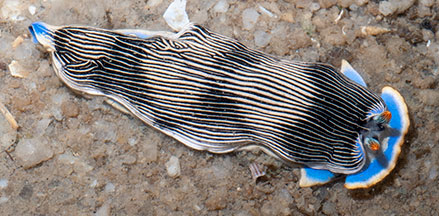
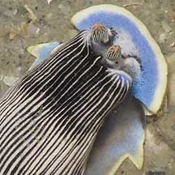
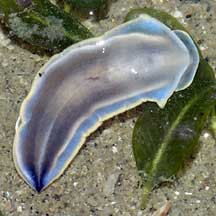
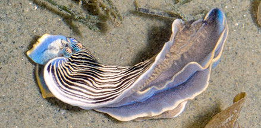
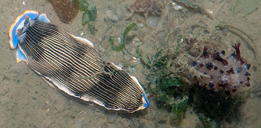

|
|
| nudibranchs text index | photo index |
| Phylum Mollusca > Class Gastropoda > sea slugs > Order Nudibranchia |
| Semper's
armina nudibranch Armina semperi Family Arminidae updated May 2020 Where seen? This slug in pajamas is sometimes seen on our Northern shores, burrowing in sandy areas near seagrasses where there are sea pens. It is more active at night. Features: 2-6cm long. Body long, narrow with narrow black-and-white stripes (which are actually ridges). The blue foot has a yellow or orange border. The wedge-shaped flap over its mouth (oral veil) is also blue with a yellow or orange border. The oral veil has no bumps on it. Rhinophores with yellow or red tips and fine black stripes. According to Bill Rudman, the coloured wiggly lines seen on the underside of the body are not gills although gas exchange may take place. These act like the cerata of aeolids, a place where the digestive gland can expand. These lines often are the same colour of their sea pen food. |
 Changi, May 14 |
 Colourful oral veil without bumps. Changi, Jun 06 |
 Underside. Changi, Oct 07 |
 Gills under the mantle skirt. Chek Jawa, Jun 05 |
| Sometimes mistaken for the bumpy-faced
armina nudibranch, that has a plain oral veil and foot and has
bumps on its 'face'. The Tiny striped
nudibranch (Dermatobranchus sp.) is also striped but is
much smaller. What does it eat? As a group, the armina nudibranchs eat soft corals and sea pens. Bill Rudman has a post sharing how an armina nudibranch feeds on a sea pen and is dragged down into the sand when the sea pen retracts. |
 About to eat this Flowery sea pen? Changi, Aug 14 |
 About to eat this Spiky sea pen? Beting Bronok, Jun 18 |


| Semper's armina nudibranch on Singapore shores |
On wildsingapore
flickr
|
| Other sightings on Singapore shores |
Links
|